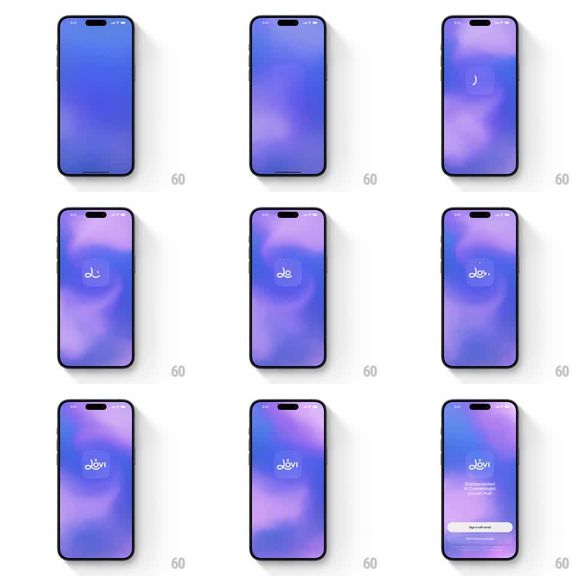

Media
Frame-by-frame

Rebuild this animation 1:1: Lovi's splash - a shifting blue-purple aurora background, a frosted glass card at center, and the "lovi" script logo drawn stroke by stroke inside it, then a handoff to sign-in.

Rebuild this animation 1:1: Lovi's splash - a shifting blue-purple aurora background, a frosted glass card at center, and the "lovi" script logo drawn stroke by stroke inside it, then a handoff to sign-in. ## Integration Integration: stack-agnostic spec - springs given as stiffness/damping, timed motions as duration + curve; map every value to your framework and animation library of choice. ## Scene Lovi splash: a full-screen gradient field that drifts from deep blue to purple-pink (soft blurred blobs moving like an aurora); centered, a frosted glass rounded-square card; inside it, the white cursive "lovi" wordmark. ## Motion spec Pattern: aurora drift + vector logo stroke-draw on frosted glass. - The background's color blobs drift continuously (15-20s loop, slow translate + scale, always soft - never sharp edges). - The glass card fades in and scales 0.92 -> 1 (400ms, ease-out), its blur picking up the moving colors behind it. - The logo draws itself: each letter's stroke animates path-length 0 -> full (~300ms per letter, 120ms apart, ease-in-out), left to right, white 3px line. - After the final letter, a small dot accents the "i" (scale pop, spring ~450/18) and the full logo does one gentle glow pulse (opacity halo, 600ms). - Hold 500ms, then the card + logo shrink and fade (300ms) into the sign-in screen rising from below (translateY 30 -> 0, 350ms). ## Calibration - The aurora moves the whole time, even during the draw - the glass card exists to show it off. - The script draw must read as handwriting - variable speed, not a constant-rate mask. ## Reduced motion Background static; logo fades in whole (300ms). ## Don't miss - The card's frosted edge highlight - a 1px inner stroke that keeps the glass readable on the lightest parts of the gradient. - Letters connect: the draw is one continuous cursive path where the letterforms join.